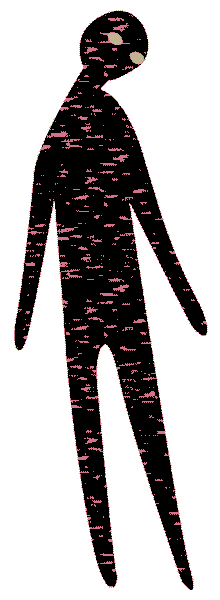
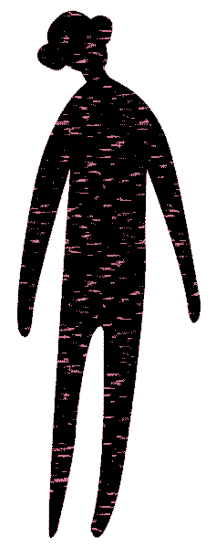
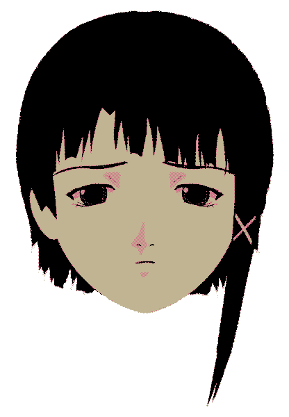
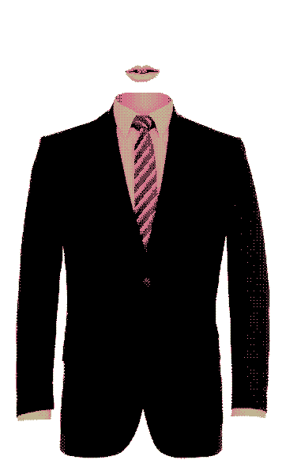
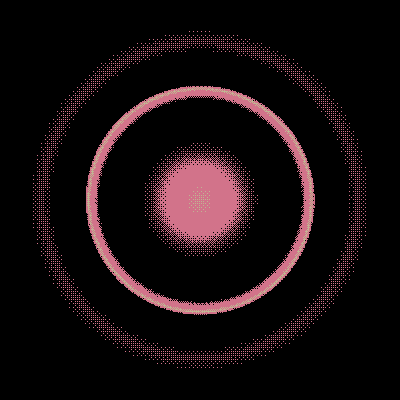

Ｈｅｌｐ ＆ Ｇｕｉｄｅｌｉｎｅｓ

Ｖｉｒｔｕａｌ Ｇｈｏｓｔ （”Ｐｅｅｐｉｎｇ Ｔｏｍ”）
Ｖｉｒｔｕａｌ Ｇｈｏｓｔ （”Ｏｂｓｅｒｖｅｒ”）
”Ｌａｉｎ”
Ｄｅｆａｕｌｔ Ｕｓｅｒ
Ｕｎｋｎｏｗｎ Ｅｎｔｉｔｙ （”Ｐｕｓｈｅｒ”）
Ｕｎｋｎｏｗｎ Ｅｎｔｉｔｙ （”Ｌｉｇｈｔ Ｏｒｂ”）
-
Ｎｅｗ Ｕｓｅｒ
-
Ｗｉｒｅｄ
● ● －－－－－－－－－－－－－－－－－－－－－－－－－－－－－－－－－－－－－ ● ●

Ｖｉｒｔｕａｌ Ｇｈｏｓｔ （”Ｐｅｅｐｉｎｇ Ｔｏｍ”）
Ｄｅｓｃｒｉｐｔｉｏｎ：
－－－－－－－－－－－－－－－－－－－－－－－－－－－－－－－－
Ｃａｎ ｂｅ ｓｅｅｎ ａｎｄ ｈｅａｒｄ ｂｙ ｕｓｅｒｓ
ａｎｄ ａｄｍｉｎｉｓｔｒａｔｉｖｅ ａｓｓｉｓｔａｎｔｓ．
Ｃａｎ ｎｏｔ ｐｉｃｋ ｕｐ ｅｃｈｏｅｓ ａｎｄ ｓｏｕｎｄ ｉｎｆｏｒｍａｔｉｏｎ
ｆｒｏｍ ｔｈｅ ｗｉｒｅｄ．
Ｉｔ ｉｓ ｌｉｍｉｔｅｄ ｔｏ ｔｈｅ ｏｐｅｎ ａｎｄ ｐｕｂｌｉｃ ｗｉｒｅｄ．
Ｉｔ ｈａｓ ｎｏ ａｄｍｉｎｉｓｔｒａｔｉｖｅ ｔｏｏｌｓ．
Ｉｎ ｔｈｅ ｏｐｅｎ ｗｉｒｅｄ ｙｏｕ ｗｉｌｌ ｈａｒｄｌｙ ｔａｋｅ ｎｏｔｉｃｅ
ｏｆ ｔｈｉｓ ｅｎｔｉｔｙ．Ａｌｔｈｏｕｇｈ ｉｔ ｉｓ
ｖｉｓｉｂｌｅ ｉｔ ｉｓ ｈａｒｄ ｔｏ ｓｐｏｔ．
● ● －－－－－－－－－－－－－－－－－－－－－－－－－－－－－－－－－－－－－ ● ●

Ｖｉｒｔｕａｌ Ｇｈｏｓｔ （”Ｏｂｓｅｒｖｅｒ”）
Ｄｅｓｃｒｉｐｔｉｏｎ：
－－－－－－－－－－－－－－－－－－－－－－－－－－－－－－－－
Ｃａｎ ｎｏｔ ｂｅ ｓｅｅｎ ｏｒ ｈｅａｒｄ ｂｙ ｕｓｅｒｓ ｏｒ
ａｄｍｉｎｉｓｔｒａｔｉｖｅ ａｓｓｉｓｔａｎｔｓ．
Ｃａｎ ｎｏｔ ｓｅｅ ｏｒ ”ｓｅｎｓｅ”， ｉｔ ｏｎｌｙ ｆｕｎｃｔｉｏｎ
ｉｓ ｌｉｓｔｅｎｉｎｇ ｔｏ ｔｈｅ ｅｃｈｏｅｓ ｏｆ ｔｈｅ ｗｉｒｅｄ．
● ● －－－－－－－－－－－－－－－－－－－－－－－－－－－－－－－－－－－－－ ● ●

”Ｌａｉｎ”
Ｄｅｓｃｒｉｐｔｉｏｎ：
－－－－－－－－－－－－－－－－－－－－－－－－－－－－－－－－
Ｏｍｎｉｐｒｅｓｅｎｔ ｕｓｅｒ，
ｓｈｅ ｈｅａｒｓ ａｌｌ ａｎｄ ｓｅｅｓ ａｌｌ．
Ｕｎｌｉｍｉｔｅｄ ｐｏｗｅｒ， ｎｏｔ ｏｎｌｙ ｉｎ ｔｈｅ
ｗｉｒｅｄ ｂｕｔ ａｌｓｏ ｉｎ ｔｈｅ ｒｅａｌ ｗｏｒｌｄ．
● ● －－－－－－－－－－－－－－－－－－－－－－－－－－－－－－－－－－－－－ ● ●

Ｄｅｆａｕｌｔ Ｕｓｅｒ
Ｄｅｓｃｒｉｐｔｉｏｎ：
－－－－－－－－－－－－－－－－－－－－－－－－－－－－－－－－
Ｋｎｏｗ ｂａｓｉｃ ｃｏｍｍｕｎｉｃａｔｉｏｎ ｌｉｋｅ ｗｒｉｔｉｎｇ，
ｌｏｇ ａｎｄ ｎｏｔｅ．
Ｉｔ ｃａｎ ｓｅｅ ｗｈａｔ ａｎ ｏｂｓｅｒｖｅｒ ｃａｎ ｎｏｔ．
Ｉｔ ｃａｎ ｒｅｐｌｙ ｔｏ ｏｔｈｅｒ ｕｓｅｒｓ ｉｎ ｔｈｅ ｗｉｒｅｄ．
Ｉｔ ｉｓ ｌｉｍｉｔｅｄ ｔｏ ｔｈｅ ｏｐｅｎ ａｎｄ ｐｕｂｌｉｃ ｗｉｒｅｄ．
Ｉｔ ｈａｓ ｎｏ ａｄｍｉｎｉｓｔｒａｔｉｖｅ ｔｏｏｌｓ．
● ● －－－－－－－－－－－－－－－－－－－－－－－－－－－－－－－－－－－－－ ● ●
Ｕｎｋｎｏｗｎ Ｅｎｔｉｔｙ （”Ｐｕｓｈｅｒ”）
Ｄｅｓｃｒｉｐｔｉｏｎ：
－－－－－－－－－－－－－－－－－－－－－－－－－－－－－－－－
Ｔａｋｅ ｐｒｅｃａｕｔｉｏｎ ａｒｏｕｎｄ ｔｈｉｓ ｕｓｅｒ．
Ｗｉｌｌ ｄｏ ａｎｙｔｈｉｎｇ ｆｏｒ ｐｅｒｓｏｎａｌ ｇａｉｎ．
● ● －－－－－－－－－－－－－－－－－－－－－－－－－－－－－－－－－－－－－ ● ●

Ｕｎｋｎｏｗｎ Ｅｎｔｉｔｙ （”Ｌｉｇｈｔ Ｏｒｂ”）
Ｄｅｓｃｒｉｐｔｉｏｎ：
－－－－－－－－－－－－－－－－－－－－－－－－－－－－－－－－
Ｕｎｋｎｏｗｎ ｐｕｒｐｏｓｅ．
Ｅｘｔｒｅｍｅｌｙ ｒａｒｅ ｉｎ ｔｈｅ ｏｐｅｎ ｗｉｒｅｄ．
● ● －－－－－－－－－－－－－－－－－－－－－－－－－－－－－－－－－－－－－ ● ●